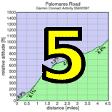

|
 |
| Kelly Crowley in her national team jersey leads the women up On Orbit (Thomas Preisler) |
Today, 126 Low-Keyers crushed the brutal slopes of Bohlman, Norton, Kittridge, Quickert, On Orbit, and Bohlman. Truly this wasn't a day to talk about times, speeds, or placings. With a climb this intimidating, this unrelenting, this painful, to cross the finish is to win. And we had by far a Low-Key record for winners today.
The weather was absolutely perfect, the pavement was perfect, and riders were ready today as coordinator James Porter hit the car horn signaling riders to start from the ceremony. Here was the trickiest part of the ride, as so many riders crammed into a single lane of the narrow road resulted in a bit of incidental contact here and there. Soon enough riders reached the volunteers pointing the way toward Norton... the climb was about to really start.
Grades over 10% in this section were merely a harbringer of what was to come, but the pack almost immediately stretched on the hill. Closing out the first kilometer a brief interlude marked an end to this opening course, but it was all too brief to prepare for what followed.
What followed was un unrelenting series of brutally steep slopes as Norton gave way to Kittridge. Then Kittridge is blocked, forcing a left onto Quickert. Then Quickert climbs, onward, to the legendary On Orbit.
On Orbit. Such a silly name yet it immediately strikes a sobering fear into those who know it. On Orbit: where the rider is presented not once, but twice with inhumanely steep grades which send the will quivering to the brink. On Orbit... oh, the humanity!
But what makes On Orbit survivable is the knowledge that at its top comes, finally, some relief. A brief descent, an oh-so-precious few heartbeats of recovery. And today, riders were treated to a small crowd at the bottom, as a group of ACTC riders, having summited already, cheered them on back to Bohlman.
But it wasn't over. Bohlman's 11% grade here by any standard is steep, any standard except that which preceded it. Still, the need to focus, to push on, to not relax.
Then finally the rollers, carefully around a few tight turns, a roadside dog unaccustomed to so many intruders, and it was done. Defeated. For another year.
Leaders this week: Chris Phipps returned for his first Low-Key here to push previously undefeated Tracy Colwell into second for the week. Super-master Harlan Chapman was third in the men's standings. In the women's ranking, Kelly Crowley took the top spot the second week in a row, with Rikke Preisler second and Laura Stern third. And in the hybrid-electric division, Bill Bushnell led team Low-Key to its first top-ranking of the year. Not surprisingly, no juniors this week. They've got plenty of time ahead to deal with this one in the future.
Thanks to our super-volunteers this week for making this challenging climb go super-smoothly.
Strava T-shirt qualifiers indicated with orange background.
| pl | # | name | team | cat | time | mph | fph | score |
|---|---|---|---|---|---|---|---|---|
| 1 | 6 | Bill Bushnell | Low-Key | Its All About The Bike | 18:10 | 14.66 | 6639 | 116.74 |
| pl | # | name | team | cat | time | mph | fph | score |
|---|---|---|---|---|---|---|---|---|
| 1 | 424 | Chris Phipps | Western Wheelers | 1 | 26:08 | 10.19 | 4615 | 131.22 |
| 2 | 48 | Tracy Colwell | Team Colwell | 40+ | 26:51 | 9.92 | 4492 | 127.72 |
| 3 | 43 | Harlan H. Chapman | Morgan Stanley Smith Barney Specialized | 50+ | 27:11 | 9.80 | 4437 | 126.15 |
| 4 | 1 | Daniel Connelly | Low-Key | 3 | 27:30 | 9.69 | 4385 | 124.70 |
| 5 | 404 | Jacob Berkman | Dolce Vita Cycling | 30+ | 27:37 | 9.65 | 4367 | 124.17 |
| 6 | 114 | Steve Peck | Silicon Valley Triathlon | 45+ | 27:55 | 9.54 | 4320 | 122.84 |
| 7 | 33 | Bill Brier | Team Fremont FFBC p/b Chipotle | 45+ | 28:40 | 9.29 | 4207 | 119.62 |
| 8 | 44 | Tim Clark | Low-Key | 40+ | 28:56 | 9.21 | 4168 | 118.52 |
| 9 | 74 | Rich Hill | LGBRC | 45+ | 28:59 | 9.19 | 4161 | 118.32 |
| 10 | 152 | Ben Weir | 30+ | 29:06 | 9.15 | 4144 | 117.84 | |
| 11 | 63 | Joe Fant | San Jose Bike Club | 50+ | 29:16 | 9.10 | 4121 | 117.17 |
| 12 | 106 | McLovin | The Brown Zone | 1 | 29:20 | 9.08 | 4111 | 116.90 |
| 13 | 308 | Rune Dahl | Western Wheelers | 45+ | 29:23 | 9.07 | 4104 | 116.70 |
| 14 | 113 | Christian Paquet | Doogie | 29:32 | 9.02 | 4084 | 116.11 | |
| 15 | 329 | Dave Blizard | Pen Velo/Pomodoro | 40+ | 29:41 | 8.97 | 4063 | 115.52 |
| 16 | 428 | Tommy "Milktoast" Rice | Coretechs Cycling Team | 50+ | 29:43 | 8.96 | 4058 | 115.40 |
| 17 | 96 | Bennett Chi Lee | Speedy Bees | 45+/Ponytail | 29:48 | 8.94 | 4047 | 115.07 |
| 18 | 133 | Dai Sieh | The Brown Zone | Robusto | 29:50 | 8.93 | 4042 | 114.94 |
| 19 | 59 | Mark Edwards | Bike Trip/Symantec | 50+ | 29:50 | 8.93 | 4042 | 114.94 |
| 20 | 422 | Dan Palmer | Bike Trip/Symantec | 45 T | 30:00 | 8.88 | 4020 | 114.31 |
| 21 | 434 | Brooks Sizemore | Pen Velo/Pomodoro | 4 | 30:03 | 8.87 | 4013 | 114.12 |
| 22 | 261 | Joe Sullivan | San Jose Bike Club | 35+ | 30:15 | 8.81 | 3987 | 113.36 |
| 23 | 311 | Brian Edwards | Dirkless | 30:29 | 8.74 | 3956 | 112.49 | |
| 24 | 61 | Steven Enns | Dirkless | 30:30 | 8.73 | 3954 | 112.43 | |
| 25 | 325 | Kevin Keenan | Sr's & Mr's of No Mercy | 55+ | 30:33 | 8.72 | 3948 | 112.25 |
| 26 | 53 | J.D. Daniels | Eden Bikes | 35+ | 30:39 | 8.69 | 3935 | 111.88 |
| 27 | 251 | Dan Perry | Bike Trip/Symantec | 40+ | 30:50 | 8.64 | 3911 | 111.22 |
| 28 | 419 | Dave Morton | M35 | 30:52 | 8.63 | 3907 | 111.10 | |
| 29 | 432 | Ken Sato | Bike Trip/Symantec | 45+ | 30:54 | 8.62 | 3903 | 110.98 |
| 30 | 440 | Cieran Byrne | Western Wheelers | 31:01 | 8.59 | 3888 | 110.56 | |
| 31 | 240 | Paul McKenzie | Marc Pro - Strava | 55+ | 31:06 | 8.57 | 3878 | 110.26 |
| 32 | 433 | Mike Schuster | 40+ | 31:31 | 8.45 | 3827 | 108.80 | |
| 33 | 213 | Andy Crews | Diablo | 40+ | 31:34 | 8.44 | 3820 | 108.63 |
| 34 | 78 | Tick Houk | The Brown Zone | 50+ | 31:37 | 8.43 | 3814 | 108.46 |
| 35 | 66 | Klaus Fleischmann | 40= | 31:43 | 8.40 | 3802 | 108.12 | |
| 36 | 64 | TOM FERREIRA | Eden Bikes | 45+ | 31:51 | 8.36 | 3786 | 107.67 |
| 37 | 129 | Tim Sawyer | Bike Trip/Symantec | 50+ | 31:52 | 8.36 | 3785 | 107.61 |
| 38 | 237 | Justin Lucke | LGBRC | Plant Based | 31:55 | 8.35 | 3779 | 107.44 |
| 39 | 126 | Denin Sahovic | The Brown Zone | 35+ | 31:59 | 8.33 | 3771 | 107.22 |
| 40 | 242 | Peter Mehlitz | Too-Old-To-Count | 32:00 | 8.33 | 3769 | 107.16 | |
| 41 | 225 | Chris Furgiuele | Dolce Vita Cycling | 35+ | 32:06 | 8.30 | 3757 | 106.83 |
| 42 | 92 | KP | The Brown Zone | None Of Your Bee'S Wax | 32:15 | 8.26 | 3740 | 106.33 |
| 43 | 144 | Nils Tikkanen | Bike Trip/Symantec | Honey Badger | 32:18 | 8.25 | 3734 | 106.17 |
| 44 | 122 | Doug Reynolds | Alberto's Steak House | 60+ | 32:23 | 8.23 | 3724 | 105.89 |
| 45 | 80 | Martin Hyland | Western Wheelers | 55+ | 32:27 | 8.21 | 3716 | 105.68 |
| 46 | 127 | Naoto Sato | 45+ | 32:45 | 8.13 | 3682 | 104.71 | |
| 47 | 34 | Adam Brinkman | Dirkless | 30+ | 32:45 | 8.13 | 3682 | 104.71 |
| 48 | 309 | Bryn Dole | Blekko | 40+ | 32:53 | 8.10 | 3668 | 104.28 |
| 49 | 331 | Christopher O'Keefe | Atomic Bonk | 45+ | 32:54 | 8.10 | 3666 | 104.23 |
| 50 | 52 | Rob Cosaro | Doogie | 50+ | 32:56 | 8.09 | 3662 | 104.12 |
| 51 | 429 | John Richardson | Pen Velo/Pomodoro | 55+ | 32:57 | 8.08 | 3660 | 104.07 |
| 52 | 117 | Bill Preucel | Sr's & Mr's of No Mercy | 45+ | 33:21 | 7.99 | 3616 | 102.82 |
| 53 | 105 | Russ McCrary | Sr's & Mr's of No Mercy | 50+ | 33:31 | 7.95 | 3598 | 102.31 |
| 54 | 410 | Jeff Farnsworth | San Jose Bike Club | 50+ | 33:47 | 7.89 | 3570 | 101.50 |
| 55 | 103 | Bogdan Marian | 30+ | 33:48 | 7.88 | 3568 | 101.45 | |
| 56 | 413 | Jimfox | hammer nutrition | 65+ | 33:57 | 7.85 | 3552 | 101.01 |
| 57 | 202 | Stephen Berg | Western Wheelers | 30+ | 34:10 | 7.80 | 3530 | 100.37 |
| 58 | 267 | Alan Weatherall | San Jose Bike Club | 34:25 | 7.74 | 3504 | 99.64 | |
| 59 | 121 | Carlos Reyes | 20+ | 34:48 | 7.66 | 3466 | 98.54 | |
| 60 | 305 | Gino Cetani | Western Wheelers | 40+ | 34:49 | 7.65 | 3464 | 98.49 |
| 61 | 112 | Shance Ordell | Western Wheelers | 35+ 123 | 35:00 | 7.61 | 3446 | 97.98 |
| 62 | 148 | David Vrane | Sr's & Mr's of No Mercy | 45+ | 35:01 | 7.61 | 3444 | 97.93 |
| 63 | 268 | Jens Weber | Doogie | 30+ | 35:03 | 7.60 | 3441 | 97.84 |
| 64 | 156 | Matt Wocasek | Bike Trip/Symantec | 45+ | 35:23 | 7.53 | 3408 | 96.91 |
| 65 | 136 | Frederick Stamm | Pen Velo/Pomodoro | 55+ | 35:31 | 7.50 | 3396 | 96.55 |
| 66 | 12 | Will von Kaenel | LGBRC | 50+ | 35:45 | 7.45 | 3373 | 95.92 |
| 67 | 431 | Curtis Ruegg | Pen Velo/Pomodoro | 45+ | 35:55 | 7.42 | 3358 | 95.48 |
| 68 | 232 | Franz Kelsch | Alberto's Steak House | 60+ | 36:02 | 7.39 | 3347 | 95.17 |
| 69 | 408 | Fred Egley | Dos Egleys | 45+ | 36:09 | 7.37 | 3336 | 94.86 |
| 70 | 83 | Tim Irvine | LGBRC | 40+ | 36:32 | 7.29 | 3301 | 93.86 |
| 71 | 153 | Jim Williams | Alberto's Steak House | 60+ | 36:33 | 7.29 | 3300 | 93.82 |
| 72 | 211 | Philip Clark | 25+ | 36:53 | 7.22 | 3270 | 92.97 | |
| 73 | 55 | Jon Degenhardt | Alameda Velo | 50+ | 36:56 | 7.21 | 3265 | 92.85 |
| 74 | 70 | Bruce Gardner | Sr's & Mr's of No Mercy | 40+ | 36:57 | 7.21 | 3264 | 92.81 |
| 75 | 81 | Brandon Iles | 25+ | 37:02 | 7.19 | 3257 | 92.60 | |
| 76 | 411 | Fred Frederson | Coretechs Cycling Team | Cat Slow | 37:09 | 7.17 | 3246 | 92.31 |
| 77 | 315 | Chris Gros-Balthazard | Diablo | 35+ | 37:37 | 7.08 | 3206 | 91.16 |
| 78 | 418 | Miro Miklos | 30+ | 37:37 | 7.08 | 3206 | 91.16 | |
| 79 | 215 | Vince Cummings | Alberto's Steak House | 50+ | 37:55 | 7.03 | 3181 | 90.44 |
| 80 | 332 | Take Ogawa | 35+ | 38:00 | 7.01 | 3174 | 90.24 | |
| 81 | 51 | Richard Contreras | Team Rhus | 50+ | 38:22 | 6.94 | 3143 | 89.38 |
| 82 | 436 | Michael Williams | Sr's & Mr's of No Mercy | 40+ | 38:25 | 6.93 | 3139 | 89.26 |
| 83 | 132 | Jeff Shute | 30+ | 38:25 | 6.93 | 3139 | 89.26 | |
| 84 | 435 | Matthew Werner | Bike Trip/Symantec | 50+ | 38:28 | 6.93 | 3135 | 89.15 |
| 85 | 231 | John D Kastel | Death Valley | 45+ | 38:43 | 6.88 | 3115 | 88.57 |
| 86 | 120 | Vinay Ravuri | Georgia Tech | 38:46 | 6.87 | 3111 | 88.46 | |
| 87 | 427 | David Puglia | Coretechs Cycling Team | 55+ | 39:03 | 6.82 | 3088 | 87.81 |
| 88 | 313 | David Fitch | Western Wheelers | 65+++ | 39:07 | 6.81 | 3083 | 87.67 |
| 89 | 93 | Romain Laboisse | Palo Verde Velo | 35+ | 39:20 | 6.77 | 3066 | 87.18 |
| 90 | 31 | Mark Boolootian | Bike Trip/Symantec | 50+ | 39:21 | 6.77 | 3065 | 87.15 |
| 91 | 412 | Jon Glancy | Dirkless | 39:29 | 6.75 | 3054 | 86.85 | |
| 92 | 27 | Sam Beal | Chain Reaction | 60+ | 39:56 | 6.67 | 3020 | 85.87 |
| 93 | 317 | Yihua He | Eden Bikes | 7 | 40:14 | 6.62 | 2998 | 85.23 |
| 94 | 243 | Edward Miller | SLACer | 70+ | 40:20 | 6.60 | 2990 | 85.02 |
| 95 | 421 | Ramon Ochoa | bikeforums.net | 40+ | 40:53 | 6.52 | 2950 | 83.88 |
| 96 | 41 | Jorge Chang | 35+ | 40:55 | 6.51 | 2947 | 83.81 | |
| 97 | 21 | Detlef Adam | Bike Trip/Symantec | 45+ | 41:04 | 6.49 | 2937 | 83.50 |
| 98 | 28 | Jan Berka | 45+ | 41:04 | 6.49 | 2937 | 83.50 | |
| 99 | 128 | Wink Saville | 60+ | 41:11 | 6.47 | 2928 | 83.27 | |
| 100 | 219 | Pierre Doussiere | 50+ | 41:54 | 6.36 | 2878 | 81.84 | |
| 101 | 145 | Bruno Tourette | Palo Verde Velo | 35+ | 41:58 | 6.35 | 2874 | 81.71 |
| 102 | 403 | Bernard Bell | 50+ | 41:59 | 6.35 | 2873 | 81.68 | |
| 103 | 65 | Greg Finley | 30+ | 42:40 | 6.24 | 2827 | 80.37 | |
| 104 | 124 | Dave Rossow | Western Wheelers | 40+ | 42:49 | 6.22 | 2817 | 80.09 |
| 105 | 39 | Kley Cardona | Alberto's Steak House | 50+ | 42:56 | 6.20 | 2809 | 79.87 |
| 106 | 204 | Brian Birkeland | Alameda Velo | 45+ | 44:10 | 6.03 | 2731 | 77.64 |
| 107 | 68 | Stephen Fong | San Jose Bike Club | 5 | 44:58 | 5.92 | 2682 | 76.26 |
| 108 | 247 | Ronald Ng | ADO Gang | 45+ | 44:58 | 5.92 | 2682 | 76.26 |
| 109 | 36 | Rich Brunner | Santa Clara | 40+ | 45:32 | 5.85 | 2649 | 75.31 |
| 110 | 327 | Thomas Maslen | Western Wheelers | 45+ | 45:55 | 5.80 | 2626 | 74.68 |
| 111 | 146 | Luis Valente | Palo Verde Velo | 50+ | 46:29 | 5.73 | 2594 | 73.77 |
| 112 | 430 | Michael Riepe | Webcor/Alto Velo | 40+ | 46:30 | 5.73 | 2594 | 73.75 |
| 113 | 160 | Craig Peters | Tradewinds Cycling Team | 40+ | 46:53 | 5.68 | 2572 | 73.14 |
| 114 | 24 | MichaelsJ. Andalora | 55+ | 47:55 | 5.56 | 2517 | 71.57 | |
| 115 | 118 | Alec Proudfoot | 45+ | 48:15 | 5.52 | 2499 | 71.07 | |
| 116 | 29 | Sachin Bhatia | 30+ | 48:55 | 5.45 | 2465 | 70.10 |
| pl | # | name | team | cat | time | mph | fph | score |
|---|---|---|---|---|---|---|---|---|
| 1 | 214 | Kelly Crowley | Metromint | 31:34 | 8.44 | 3820 | 131.36 | |
| 2 | 426 | Rikke Preisler | The Brown Zone | 35+ | 33:49 | 7.88 | 3566 | 122.62 |
| 3 | 137 | Laura Stern | Coretechs Cycling Team | 50+ | 35:16 | 7.55 | 3420 | 117.58 |
| 4 | 423 | Jennie Phillips | Sr's & Mr's of No Mercy | Tandem-Onium! | 35:23 | 7.53 | 3408 | 117.19 |
| 5 | 75 | Laura Hipp | Western Wheelers | 4 | 38:00 | 7.01 | 3174 | 109.12 |
| 6 | 265 | Janet Wagner | Sr's & Mr's of No Mercy | 50+ | 46:29 | 5.73 | 2594 | 89.20 |
| 7 | 60 | Lisa Emmerich | Sr's & Mr's of No Mercy | 50+ | 47:16 | 5.64 | 2551 | 87.73 |
| 8 | 409 | Laura Egley | Dos Egleys | 45+ | 48:55 | 5.45 | 2465 | 84.77 |
| 9 | 306 | Alison Chaiken | Sr's & Mr's of No Mercy | 45+ | 49:42 | 5.36 | 2427 | 83.43 |
| pl | team | score | riders |
|---|---|---|---|
| 1 | Low-Key | 359.96 | Bill Bushnell, Daniel Connelly, Tim Clark |
| 2 | Western Wheelers | 358.48 | Chris Phipps, Rune Dahl, Cieran Byrne, Martin Hyland, Stephen Berg, Gino Cetani, Shance Ordell, Laura Hipp, David Fitch, Dave Rossow, Thomas Maslen |
| 3 | The Brown Zone | 354.46 | McLovin, Dai Sieh, Tick Houk, Denin Sahovic, KP, Rikke Preisler |
| 4 | Bike Trip/Symantec | 340.47 | Mark Edwards, Dan Palmer, Dan Perry, Ken Sato, Tim Sawyer, Nils Tikkanen, Matt Wocasek, Matthew Werner, Mark Boolootian, Detlef Adam |
| 5 | Pen Velo/Pomodoro | 333.71 | Dave Blizard, Brooks Sizemore, John Richardson, Frederick Stamm, Curtis Ruegg |
| 6 | Sr's & Mr's of No Mercy | 332.26 | Kevin Keenan, Bill Preucel, Russ McCrary, David Vrane, Jennie Phillips, Bruce Gardner, Michael Williams, Janet Wagner, Lisa Emmerich, Alison Chaiken |
| 7 | San Jose Bike Club | 332.04 | Joe Fant, Joe Sullivan, Jeff Farnsworth, Alan Weatherall, Stephen Fong |
| 8 | Dirkless | 329.63 | Brian Edwards, Steven Enns, Adam Brinkman, Jon Glancy |
| 9 | Coretechs Cycling Team | 325.28 | Tommy "Milktoast" Rice, Laura Stern, Fred Frederson, David Puglia |
| 10 | LGBRC | 321.68 | Rich Hill, Justin Lucke, Will von Kaenel, Tim Irvine |
| 11 | Doogie | 318.07 | Christian Paquet, Rob Cosaro, Jens Weber |
| 12 | Eden Bikes | 304.78 | J.D. Daniels, TOM FERREIRA, Yihua He |
| 13 | Alberto's Steak House | 294.88 | Doug Reynolds, Franz Kelsch, Jim Williams, Vince Cummings, Kley Cardona |
| 14 | 294.37 | Mike Schuster, Philip Clark, Brandon Iles, Jeff Shute, Wink Saville, Alec Proudfoot | |
| 15 | Palo Verde Velo | 242.67 | Romain Laboisse, Bruno Tourette, Luis Valente |
| 16 | Dolce Vita Cycling | 231.00 | Jacob Berkman, Chris Furgiuele |
| 17 | Diablo | 199.79 | Andy Crews, Chris Gros-Balthazard |
| 18 | Dos Egleys | 179.63 | Fred Egley, Laura Egley |
| 19 | Alameda Velo | 170.49 | Jon Degenhardt, Brian Birkeland |
| 20 | Metromint | 131.36 | Kelly Crowley |
| 21 | Team Colwell | 127.72 | Tracy Colwell |
| 22 | Morgan Stanley Smith Barney Specialized | 126.15 | Harlan H. Chapman |
| 23 | Silicon Valley Triathlon | 122.84 | Steve Peck |
| 24 | Team Fremont FFBC p/b Chipotle | 119.62 | Bill Brier |
| 25 | Speedy Bees | 115.07 | Bennett Chi Lee |
| 26 | Marc Pro - Strava | 110.26 | Paul McKenzie |
| 27 | Blekko | 104.28 | Bryn Dole |
| 28 | Atomic Bonk | 104.23 | Christopher O'Keefe |
| 29 | hammer nutrition | 101.01 | Jimfox |
| 30 | Team Rhus | 89.38 | Richard Contreras |
| 31 | Death Valley | 88.57 | John D Kastel |
| 32 | Georgia Tech | 88.46 | Vinay Ravuri |
| 33 | Chain Reaction | 85.87 | Sam Beal |
| 34 | SLACer | 85.02 | Edward Miller |
| 35 | bikeforums.net | 83.88 | Ramon Ochoa |
| 36 | ADO Gang | 76.26 | Ronald Ng |
| 37 | Santa Clara | 75.31 | Rich Brunner |
| 38 | Webcor/Alto Velo | 73.75 | Michael Riepe |
| 39 | Tradewinds Cycling Team | 73.14 | Craig Peters |